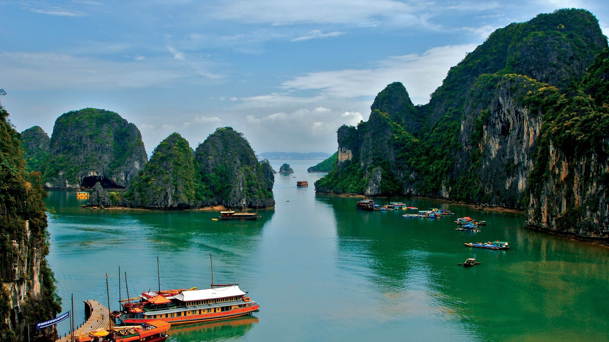

Đây là một trong những địa điểm du lịch Thành phố Hồ Chí Minh nổi tiếng nhất nằm ngay trung tâm thành phố và luôn tấp nập người ra vào mua bán, du khách check in mỗi ngày. Chợ Bến Thành buôn bán tất tần tật những mặt hàng từ thực phẩm, vải vóc, quần áo, đồ gia dụng, đặc sản Sài Gòn,… và quan trọng là khu ẩm thực cực kỳ hấp dẫn ở chợ và những góc check in ấn tượng sẽ làm bạn luôn muốn lưu lại nơi đây thật lâu.

Dinh Độc Lập hay còn gọi là hội trường Thống Nhất, đây là một công trình được xây dựng bởi người Pháp, từ thời Pháp thuộc. Đối với người dân Sài Gòn, Dinh Độc Lập là một di tích lịch sử mang ý nghĩa hòa bình và toàn vẹn lãnh thổ. Nơi đây đã được công nhận là 1 trong 10 di tích quốc gia đặc biệt của Việt Nam vào năm 2009.Dinh Độc Lập là nơi trưng bày và lưu giữ những hình ảnh, hiện vật giá trị từ những năm của thế kỷ 19 theo từng chủ đề khác nhau. Đặc biệt nơi đây vẫn còn giữ nguyên nội thất của những căn phòng quan trọng như phòng khánh tiết, phòng nội các,...
Phố đi bộ Nguyễn Huệ từ lâu đã là một điểm đến thú vị ở Sài Gòn đối với người dân bản địa và cả các du khách. Đây là một trong những địa điểm vui chơi ở Quận 1 được nhiều người ghé tới đặc biệt vào mỗi tối và dịp cuối tuần. Ở phố đi bộ Nguyễn Huệ, bạn sẽ có cơ hội tham gia vào các hoạt động như trình diễn thời trang, nghệ thuật đường phố, vui chơi giải trí, ẩm thực,... rất đặc sắc. Nơi đây là điểm check in hot nhất nhì Sài Thành mà bạn không thể bỏ lỡ trong chuyến du lịch Sài Gòn của mình.
Cũng nằm ngay trung tâm quận 1, nhà thờ Đức Bà là địa điểm du lịch thành phố Hồ Chí Minh mà bạn nhất định phải ghé đến. Nhà thờ Đức Bà là một công trình kiến trúc độc đáo mang đậm phong cách Châu Âu, là nơi sinh hoạt và tổ chức các buổi Thánh lễ cho những người theo đạo Công giáo ở Sài Thành.Ghé đến tham quan nhà thờ Đức Bà, bạn có thể đến vào buổi sáng để có thể ngắm được trọn vẹn vẻ đẹp của nhà thờ dưới ánh sáng ban ngày, check in ở mọi ngóc ngách trong nhà thờ đậm chất Gothic,… đặc biệt nhà thờ luôn đón chào những du khách, người dân và bất kỳ ai đến đây để nghe giảng đạo.